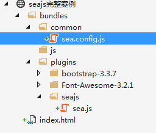

1. 简介
主要学习如何使用RequireJS来解决模块化JS编程，知识点有:
- 引入sea.js库
- 如何变成模块 define
- 如何调用模块sea.use exports
- 如何依赖模块require
seajs官网地址：https://seajs.github.io/seajs/docs/#intro
2. seajs示例
经过前面的reuqirejs的学习，很多概念和用法都清楚了，这节就直接使用seajs来完成上节的功能了，要掌握seajs需要四部曲。
- 引入sea.js库
- 使用define编写模块
- 使用sea.use调用模块
- 使用require依赖模块
2.1. 引入sea.js库
首先去官网下载seajs库，下载好后还是和上节一样建立一个项目，项目中用到的插件这里就不阐述了。

index.html:
<!DOCTYPE html>
<html>
<head>
<meta http-equiv="Content-Type" content="text/html; charset=utf-8" />
<title></title>
<meta charset="utf-8" />
</head>
<body>
<script src="bundles/plugins/seajs/sea.js"></script>
<script src="bundles/common/sea.config.js"></script>
</body>
</html>
初始化工作就做完了，接下来编写入口配置文件
sea.config.js
seajs.config({
base: "/bundles",
paths:{
"view": "/bundles/js",
"common": "/bundles/common",
"plugins":"/bundles/plugins"
},
alias: {
"jquery": "https://cdn.bootcss.com/jquery/3.2.1/jquery.min",
//这个不像requirejs，不能使用../返回上一层，所以基准目录设置为bundles
"bootstrap": "plugins/bootstrap-3.3.7/js/bootstrap.min"
}
});
入口配置只要记住三个参数就行了，其它参数很少用到，用到的时候在查API，点击查看配置的api：
- base：基准目录
- paths: 路径配置
- alias：别名配置
3. 如何变成模块
sea库和入口配置的初始工作完成之后，接下来就是编写我们的模块。
语法：
define(function (require,exports,module) {
});
固定的三个参数，不能乱写或者乱命名：
- require：依赖其他模块使用
- exports：用来在模块内部对外提供接口。
- module：它是一个对象，具体查看api
- module.exports:与 exports 类似，用来在模块内部对外提供接口。
了解了定义模块的语法，接下来就编写自定义模块：
common/neatness.validate.js
define(function (require,exports,module) {
module.exports = {
username: function (value) {
//匹配用户名,可以并只能包含数字字母下划线点或者@符号,必须以数字或者字母开头,长度大于6个字符并且不能超过30个字符
return /^[\w\d][\w\d\.\@]{5,29}$/.test(value);
},
password: function (value) {
return /^\S{6,20}$/.test(value);
}
}
});
js/index.js:
结束。。。。seajs没法按顺序加载模块，当加载bootstrap时需要依赖jquery。它们都是并发加载，没法确定加载顺序。
折中的办法是包装bootstrap，项目中那么多的框架都要包装，累死了：
define(function (require, exports, module) {
var jQuery = require('$');
// bootstrap.js源码
});
所以还是用requirejs好。